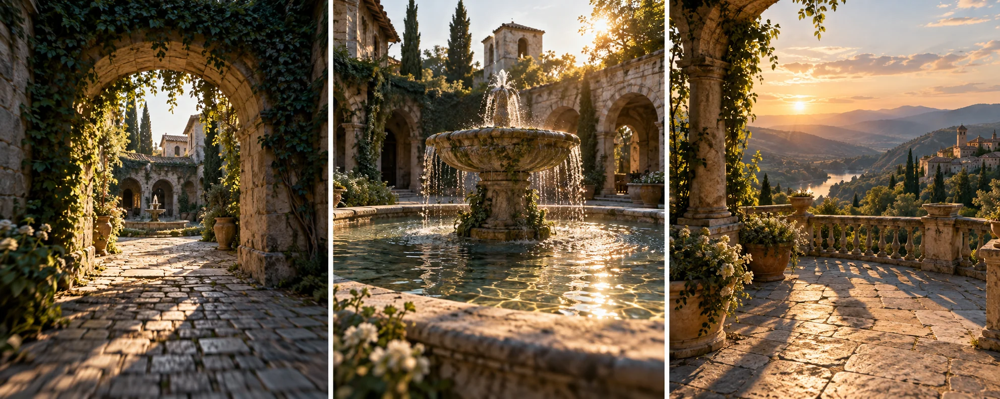

F35 · 중급 · FPV
인트로 시퀀스 제작
효과음이 장면보다 먼저·동시에·늦게 시작할 때 달라지는 주의와 의미를 구분해 선택한다.
그림에서 확인할 세 가지시선의 강조점과 소리의 순간을 맞춘다
1아치의 경계
첫 화면의 아치와 안쪽 빛을 본다. 경계를 넘는 순간을 시각 사건으로 잡으면 소리가 언제 시작할지 비교할 기준이 생긴다.
2분수라는 구체 사건
가운데 화면의 흐르는 물은 환경 소리의 근거가 된다. 아치를 지나기 전부터 물소리를 들려주면 어떤 기대를 만들지 생각해 본다.
3계곡의 넓은 공개
마지막 화면에서는 안뜰의 좁은 구조 대신 넓은 풍경이 나타난다. 앞의 소리를 남기거나 줄이는 선택이 공간 변화의 느낌을 바꿀 수 있다.
촬영 설계
촬영을 이렇게 설계한다
시각 사건의 순간을 정한다
학습 영상에서는 아치의 경계를 넘는 때, 분수가 중심이 되는 때, 계곡이 드러나는 때를 먼저 표시한다. 전체 길이에 효과음을 고르게 채우기보다 눈에 띄는 변화의 기준점을 정한다.
소리의 시작을 바꾸어 본다
같은 소리를 사건보다 먼저, 사건과 동시에, 사건 뒤에 시작하는 세 버전으로 비교한다. 먼저 들리는 소리가 다음 장소를 예고하는지, 동시에 들어오는 소리가 통과를 강조하는지 살핀다.
강조할 사건을 줄인다
모든 전환에 강한 소리를 넣으면 중요한 순간의 차이가 줄어든다. 학습안에서는 한 사건을 중심으로 남기고 나머지 소리를 낮추거나 빼서 시선의 우선순위가 더 분명해지는지 비교한다.
기존 수집본은 Tom Strojnik의 인트로 사운드 분석 영상이지만 이번에는 공식 설명을 다시 확보하지 못했다.
원본 영상FPV Sound Design Breakdown
1. 소리와 사건의 선후
소리가 시각 변화보다 먼저인지 동시에인지 나중인지 구분한다. 시간 차이가 기대·강조·여운 가운데 무엇을 만드는지 비교한다.
2. 강조의 우선순위
모든 움직임에 비슷한 소리가 붙는지 주요 사건에 차이가 생기는지 듣는다. 소리가 많아질수록 중요한 순간이 묻히는지 확인한다.
3. 원본의 실제 배치
원본이 열리면 음악과 효과음의 실제 시작점을 직접 비교한다. 이 교안의 세 시점 실험이 제작자의 실제 편집 순서라는 가정은 하지 않는다.
재생이 제한되면 원본 영상 새 창을 이용하세요.
원문 재확인 기록
사운드 분석 원문의 재확인 결과
기존 기록
기존 조사에는 Tom Strojnik의 FPV 인트로 사운드 분석 영상으로 수집되어 있다.
재확인 결과
이번 원본 URL 열기와 공식 검색에서는 현재 설명을 다시 확보하지 못했다.
학습안 범위
음악·효과음의 실제 배치나 제작자의 세부 발언을 새로 확인한 사실로 제시하지 않는다.
아치·분수·계곡에 소리를 먼저·동시에·늦게 놓는 방법은 비교를 위한 독립적인 편집 학습안이다.
Kling 프롬프트단문 인과 체인 · 16:9
내가 직접 만들어 본다
아치 너머의 분수를 먼저 보여 준 뒤 경계를 넘어 계곡을 공개하여, 사건 앞의 단서가 기대와 주목을 만드는 순서를 지시한다.
같은 인과를 FPV 시점의 속도, 근접 통과, 회전으로 표현한다.
- S01오래된 석조 아치 너머에 안뜰이 있다.
- S02영상은 하나의 연속 쇼트다.
- S03화면에 드론 기체는 나오지 않는다.
- S04안뜰 한가운데에서 분수가 물을 뿜는다.
- S05처음 10초 동안 카메라는 아치를 향해 천천히 다가간다.
- S06분수의 물줄기가 아치 안쪽에서 먼저 보인다.
- S07그 단서 때문에 다음 장소가 예고된다.
- S08다음 10초 동안 카메라는 아치의 경계를 넘는다.
- S09경계를 넘는 순간 분수가 화면 중심에 선다.
- S10분수가 중심이 되기 때문에 시선이 물에 모인다.
- S11마지막 10초 동안 카메라는 안뜰 끝으로 날아간다.
- S12안뜰 끝에서 벽이 열리고 넓은 계곡이 나타난다.
- S13좁은 안뜰과 넓은 계곡의 차이가 한눈에 드러난다.
[네거티브]
- 아치가 무너졌거나 문이 닫힌 벽이 되는 것 금지
- 장면이 여러 컷으로 나뉘어 끊기는 것 금지
- 화면에 드론 기체가 나타나는 것 금지
- 분수가 마른 바닥만 남기고 사라지는 것 금지
- 카메라가 아치 앞에서 멈추거나 물러나는 것 금지
- 분수 물줄기가 단서 없이 갑자기 등장하는 것 금지
- 안뜰이 예고 없이 다른 장소로 바뀌는 것 금지
- 카메라가 아치를 옆으로 비껴 지나가는 것 금지
- 경계를 넘어도 분수가 화면 밖에 남는 것 금지
- 분수 말고 다른 사물에 시선이 쏠리는 것 금지
- 카메라가 안뜰 벽에 부딪힐 듯 멈추는 것 금지
- 계곡이 컷 전환으로 갑자기 바뀌어 나오는 것 금지
- 좁은 안뜰과 넓은 계곡이 비슷하게 보이는 것 금지
- S01영상은 FPV 시점의 하나의 연속 쇼트다.
- S02화면에 드론 기체는 나오지 않는다.
- S03오래된 석조 아치 너머에 안뜰이 있다.
- S04처음 10초 동안 카메라는 아치를 향해 곧장 질주한다.
- S05아치 안쪽에서 분수의 물줄기가 먼저 보인다.
- S06그 단서 때문에 카메라는 점점 속도를 높인다.
- S07다음 10초 동안 카메라는 아치의 경계를 스치며 통과한다.
- S08경계를 넘는 순간 분수가 화면 중심에 선다.
- S09카메라가 분수 위에서 빙글 한 바퀴 돈다.
- S10도는 동안 아치와 벽과 하늘이 차례로 스쳐 지나간다.
- S11분수가 중심이 되기 때문에 시선이 물에 모인다.
- S12마지막 10초 동안 카메라는 분수 위를 스치며 안뜰 끝으로 날아간다.
- S13안뜰 끝의 벽이 열리며 넓은 계곡이 나타난다.
- S14카메라는 급감속하며 계곡 위로 솟아오른다.
- S15좁은 안뜰과 넓은 계곡의 차이가 한눈에 드러난다.
[네거티브]
- 컷이 나뉘어 여러 쇼트로 끊기는 것 금지
- 화면에 드론 기체가 나타나는 것 금지
- 새 건물과 현대적 구조물이 나오는 것 금지
- 아치 앞에서 느리게 맴도는 것 금지
- 분수가 아치 뒤에 완전히 가려지는 것 금지
- 단서와 무관하게 속도가 일정한 것 금지
- 아치와 멀어 경계 통과가 안 보이는 것 금지
- 분수가 화면 가장자리에 밀려나는 것 금지
- 제자리에서 흔들릴 뿐 한 바퀴 돌지 않는 것 금지
- 도는 동안 풍경이 하나도 바뀌지 않는 것 금지
- 시선이 물이 아닌 곳으로 흩어지는 것 금지
- 분수 앞에서 멈춰 더 가지 않는 것 금지
- 계곡 없이 벽만 계속 이어지는 것 금지
- 감속 없이 계곡을 지나쳐 버리는 것 금지
- 두 공간의 차이가 느껴지지 않는 것 금지
결과에서 볼 것
- 아치 안쪽에서 분수가 먼저 보여 다음 장소를 예고했는가
- 경계를 넘는 순간 분수가 중심 사건이 되었는가
- 안뜰에서 계곡으로 열리는 공개가 분명했는가
- 첫 동작부터 카메라가 빠르게 움직였는가
- 사람이나 물체 곁을 가까이 스치며 지나갔는가
- 회전과 급감속이 화면에 보였는가